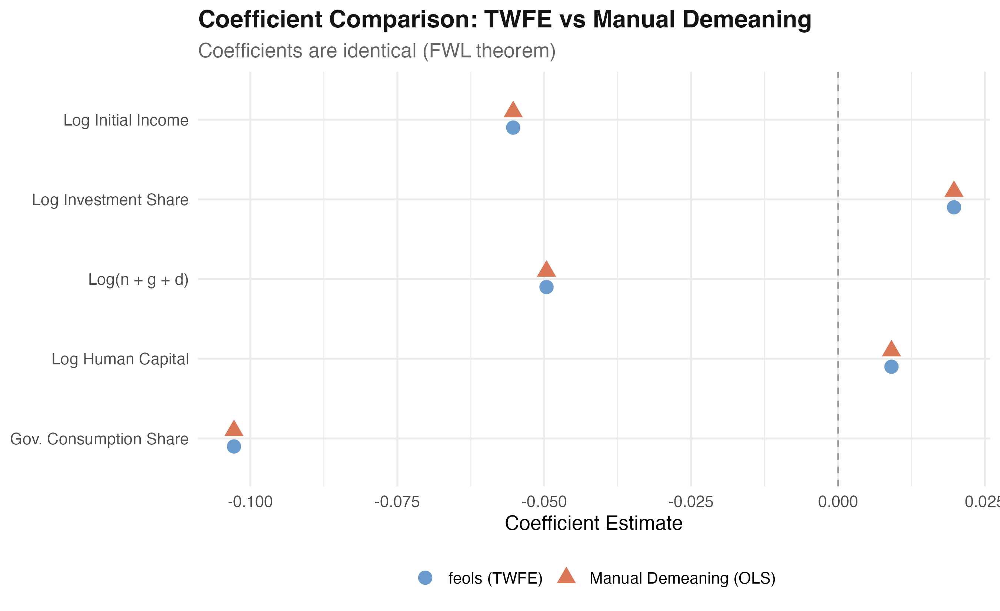
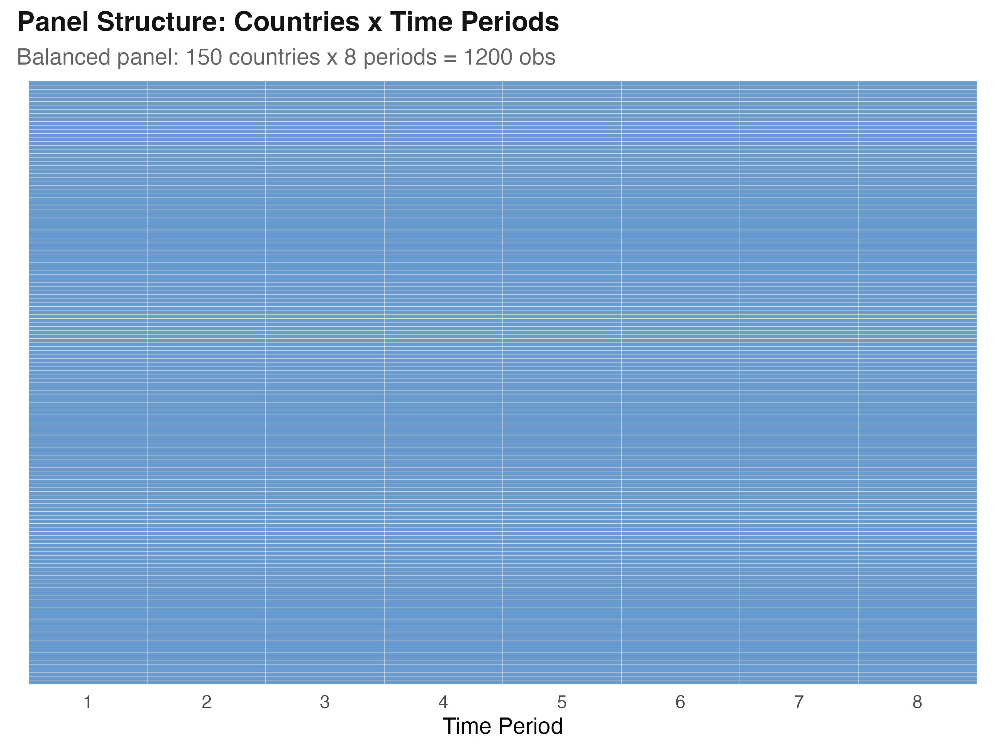
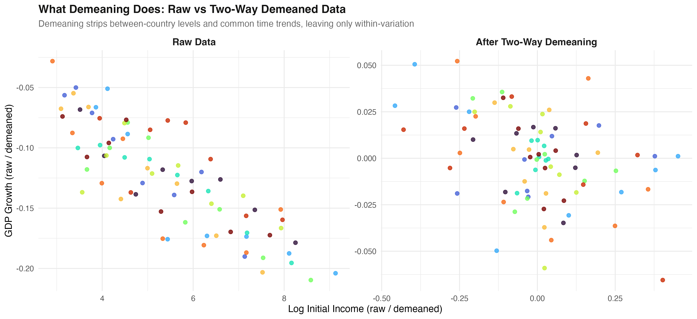
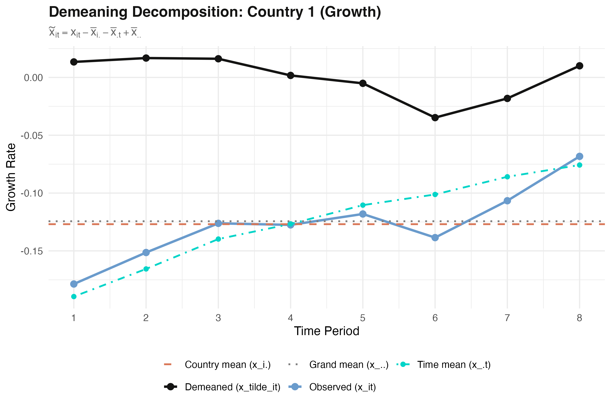
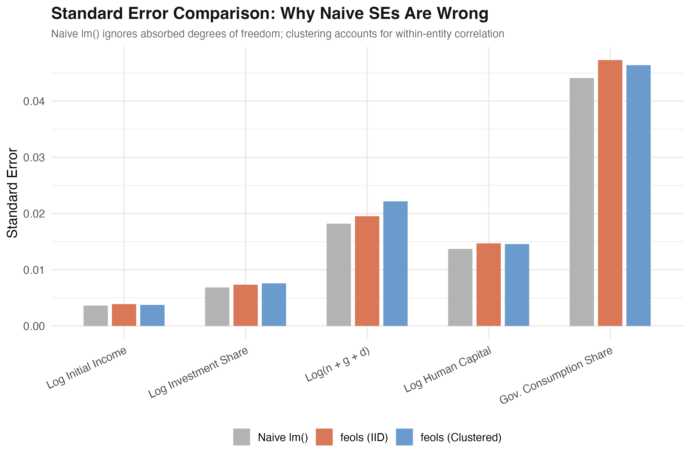

Manual demeaning, OLS, and the Frisch–Waugh–Lovell theorem
Nagoya University (GSID)
June 11, 2026
Act I
feols(y ~ x | id + time) gives you an answer — but what did it do to the data?One line of fixest estimates two-way fixed effects. The machinery is hidden.
Why do time-invariant regressors silently vanish? And if you run plain lm() on hand-demeaned data, should you get the same number? Let’s open the box.

feols TWFE (blue circles) and manual-demeaning OLS (orange triangles) land on the exact same five positions.
Act II

Every one of 150 countries appears in all 8 periods — a perfectly balanced 1,200-row panel.
\[y_{it} = \alpha_i + \lambda_t + \beta x_{it} + u_{it}\]
Each country \(i\) gets its own intercept \(\alpha_i\); each period \(t\) gets its own \(\lambda_t\). Together they absorb every time-invariant country trait and every country-invariant shock.
Those intercepts are the “controls.” FWL says we can project them out instead of estimating them.
\[\tilde{x}_{it} = x_{it} - \bar{x}_{i\cdot} - \bar{x}_{\cdot t} + \bar{x}_{\cdot\cdot}\]
Subtract both the country mean and the time mean and the grand mean leaves twice — once inside each. Add \(\bar{x}_{\cdot\cdot}\) back once to restore it.
Like a Venn diagram: remove both circles entirely and the overlap is deleted twice. Add the overlap back once.
\[\hat{\beta}_{\text{TWFE}} = \hat{\beta}_{\text{OLS on demeaned data}}\]
The slope on \(x\) controlling for the dummies equals the slope from OLS on the residualized \(y\) and \(x\). TWFE is the special case where the controls are the country and time dummies.
Noise-cancelling headphones: subtract the engine hum from the signal first, then listen — same music as a silent room.
feols()growth ~ ... | id + timelm()VARS <- c("growth","ln_y_initial","log_s_k","log_n_gd","log_hcap","gov_cons")
cmean <- aggregate(panel[VARS], list(panel$id), mean) # country means
tmean <- aggregate(panel[VARS], list(panel$time), mean) # time means
gmean <- colMeans(panel[VARS]) # grand means
for (v in VARS) # demean each column
panel[[paste0(v,"_dm")]] <-
panel[[v]] -
cmean_lookup[[v]] -
tmean_lookup[[v]] +
gmean[v]
manual <- lm(growth_dm ~ ln_y_initial_dm + log_s_k_dm + log_n_gd_dm + log_hcap_dm + gov_cons_dm, panel)| Variable | Mean of demeaned column |
|---|---|
growth_dm |
−8.1e−17 |
ln_y_initial_dm |
8.3e−15 |
gov_cons_dm |
1.8e−16 |
All six means sit at \(10^{-15}\) or smaller — effectively zero. The transformation is implemented correctly.
Act III
| Variable | feols TWFE |
manual OLS | difference |
|---|---|---|---|
ln_y_initial |
−0.055286 | −0.055286 | −4.2e−17 |
log_s_k |
0.019725 | 0.019725 | 3.5e−18 |
gov_cons |
−0.102795 | −0.102795 | −3.1e−16 |
all.equal() returns TRUE. Largest difference 3.05e−16 ≈ IEEE-754 machine epsilon (2.2e−16).
−0.055286
Convergence \(\hat\beta\) on log initial income — identical from feols() and from lm() on demeaned data

Raw cross-country spread on the left (x from ~3 to 9); after two-way demeaning, the same data compresses to roughly −0.5 to 0.3 around zero.

Country 1: observed growth (blue), country mean (orange dashed), time means (teal), grand mean (gray), and the demeaned residual (black) fluctuating around zero.
lm() standard errors are too small
For every regressor the naive lm() bar (gray) is shorter than feols IID (orange) and clustered (blue).
Objection. “If lm() on demeaned data nails the coefficients, why not just use it and skip fixest?”
Response. Because correct points \(\neq\) correct inference. lm() understates SEs by 7–22%, giving artificially narrow CIs and inflated \(t\)-stats. feols() makes the df correction and offers clustering for serial correlation — use a dedicated panel estimator for any hypothesis test.